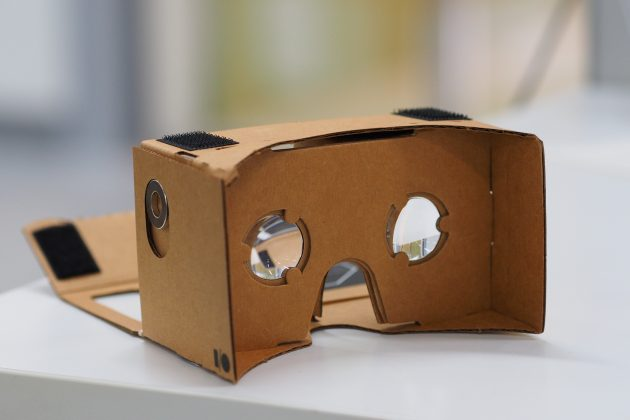

Виртуальная реальность (англ. virtual reality, VR) — созданный техническими средствами мир, передаваемый человеку через его ощущения: зрение, слух, обоняние, осязание и другие. Виртуальная реальность имитирует как воздействие, так и реакции на воздействие. Для создания убедительного комплекса ощущений реальности компьютерный синтез свойств и реакций виртуальной реальности производится в реальном времени.
В далеком 2010-м году, пределом наших мечтаний были 3D телевизор, или игровая приставка Nintendo Wii. Сейчас, массовой тенденцией в мире цифровых развлечений стали очки виртуальной реальности, такие гиганты как Valve, Sony, Microsoft и даже Facebook (хозяева дочерней компании Oculus) – стремятся ухватить свой лакомый кусочек рынка в гонке на наиболее правдивую виртуальную реальность.
Наиболее простые устройства представляют собой кусок картона, пару пластиковых линз и смартфон в качестве экрана. У большинства такие устройства ассоциируются с Google Cardboard, благодаря логотипу «Работает с Cardboard» в приложениях и на устройствах. Хотя идея витала в воздухе задолго до появления детища поискового гиганта.

Для менее именитых аналогов таких ярлычков не придумали, но, несмотря на это, любые картонные VR-гарнитуры работают с большинством устройств на Android и iOS и позволяют просматривать соответствующий контент.
Такие очки виртуальной реальности могут быть изготовлены и из других материалов, например из алюминия или пластика. Один из наиболее ярких примеров — отечественная разработка Fibrum Pro, предназначенная для работы с любыми смартфонами.
В крупных городах США Google Cardboard и их аналоги легко раздобыть совершенно бесплатно во время выхода нового фильма или рекламных кампаний известных брендов. К сожалению, в России такая раздача очков не так распространена.
Есть и другие способы обзавестись простейшим VR-устройством: купить аналог в китайском магазине, приобрести картонки от партнёров Google или на официальном сайте. Или сделать самому из двух линз и распечатанного шаблона.
Несмотря на доступность картонных VR-гарнитур, недостатков у них предостаточно. Главным из них является невозможность работы со старыми смартфонами. На них просто не запускается основное приложение Cardboard. Кстати, это касается не только Android-гаджетов. До недавнего времени Apple вообще игнорировала виртуальную реальность, и даже сейчас многие приложения недоступны на iPhone.
Приложения для картонных девайсов не проблема. Vrse, Jaunt, IM360, YouTube’s 360° Videos Channel — это далеко не полный список ресурсов для скачивания и просмотра трёхмерного видео. Список совместимых с Cardboard игр и панорам уже давно перевалил за разумные пределы.
Среднеценовые устройства
Подобные гарнитуры пытаются привлечь другую категорию покупателей. В отличие от простейших и довольно неуклюжих Cardboard, они стильные. Многие из них оснащены дополнительными датчиками слежения, более сложными механизмами управления, возможностью настраивать фокусное расстояние между линзами или собственными экранами (требуют отдельного питания).
Наиболее известна среди таких гарнитур, пожалуй, самая сложная из них — Samsung Gear VR. Чуть отстают Carl Zeiss VR One или французская новинка под названием Homido. Не стоит сбрасывать со счетов и новую гарнитуру LG 360 VR, пусть топорную и с сырым софтом.
В отличие от картонных устройств, Samsung Gear VR и LG 360 VR отслеживают изменения положения головы пользователя (с использованием координатной сетки), а не просто факт тряски или перемещения, как Cardboard (благодаря акселерометру смартфона). Но точности серьёзных моделей от подобных гарнитур всё равно ждать бесполезно: необходима внешняя камера.
Радует, что гаджеты этого сегмента способны работать с Bluetooth-геймпадом или пультом.
Производители устройств девайсов этого сегмента уделяют внимание и контенту. Так, Samsung запустила собственное приложение для просмотра видео и уже наладила выпуск собственных игр, а также заключила соглашения с музеями о создании трёхмерных гидов.
Высшая лига
Лидеры рынка — Oculus Rift, HTC Vive и Sony PlayStation VR — не имеют никакой связи со смартфонами: это совсем другие гаджеты. Все они базируются на разработках, связанных с ПК или игровыми консолями. И обеспечивают совершенно другой уровень погружения, ведь они оснащены датчиками движения и собственными высококачественными экранами (это лучшая на рынке графика).
Более того, все эти устройства разработаны так, чтобы вызывать минимальный дискомфорт и обеспечивать максимальную изоляцию от внешней среды. Помогают в этом и специальные аудиосистемы с настоящим трёхмерным звуком.
К сожалению, стоимость устройств высшей лиги (особенно с учётом текущего курса доллара) превышает все разумные пределы. Так, очки виртуальной реальности Oculus Rift стоят 600 долларов, а для их полноценного использования потребуется контроллер движения, цена которого пока неизвестна. HTC Vive стоят почти 800 долларов. Цены на PlayStation VR пока не озвучены, но вряд ли окажутся ниже. Не стоит забывать, что для использования Oculus и Vive потребуется компьютер стоимостью порядка 1 000 долларов (и кстати, Mac работать не будет). Для устройства от Sony необходима PlayStation 4. Дорого? И не стоит ожидать, что в ближайшее время будет дешевле.
Стоит ли оно того? При помощи этих устройств можно не только сидеть и просматривать трёхмерный контент. Они позволяют участвовать в происходящем. В Oculus и Sony для этого используются маркеры, которые отслеживаются внешней камерой. Такой позиционный захват позволяет эффективно работать с пространством и по-настоящему перемещаться в виртуальной реальности.
От дешёвых аналогов короли VR-пространства отличаются и способом управления. В качестве контроллера в Oculus Rift используется геймпад Xbox One. PlayStation VR предлагаются с контроллером от PlayStation 4.
Хотя даже не в этом дело: точность контроллеров, отслеживающих движения пользователя, позволяет играть в пинг-понг в реальном времени. И здесь выигрывает Sony: контроллер движения уже существует и работает в PS 4, а джойстик находится в свободной продаже. В отличие от полумифического геймпада Vive и пульта для Oculus.
Как видите, рынок огромен и выбор крайне неоднозначный. Но на самом деле нужно только решить, сколько вы готовы потратить на подобное развлечение.
Вы также можете посмотреть видео игры Job Simulator в очках HTC Vive: